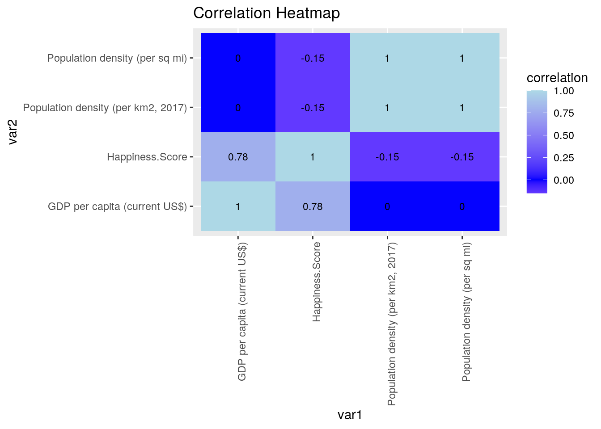
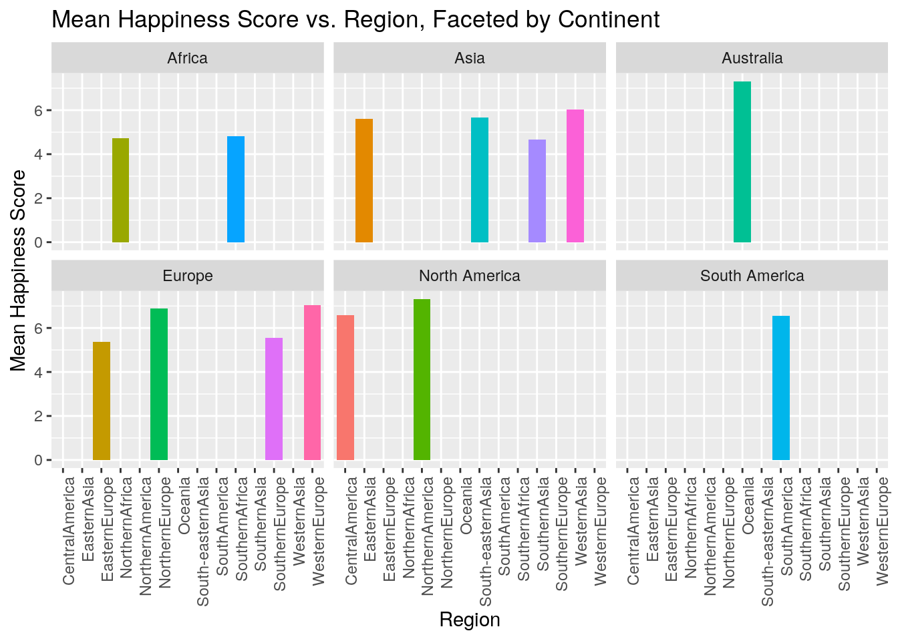
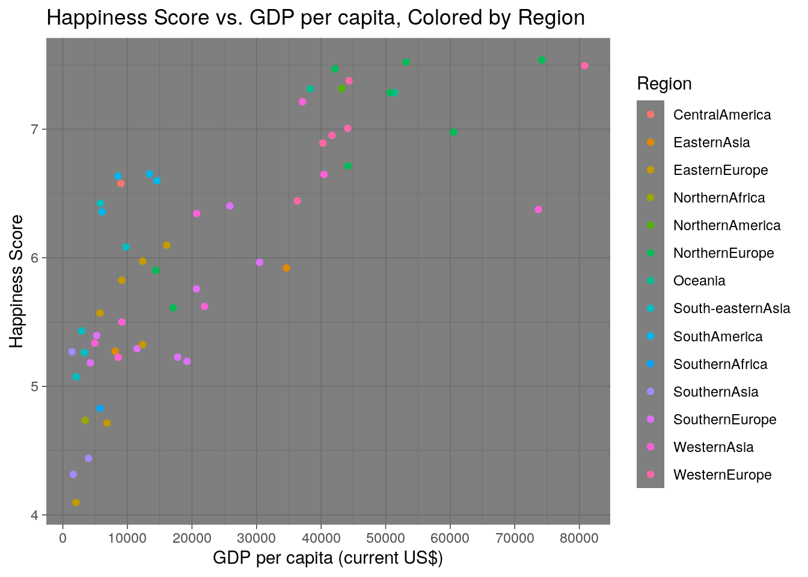
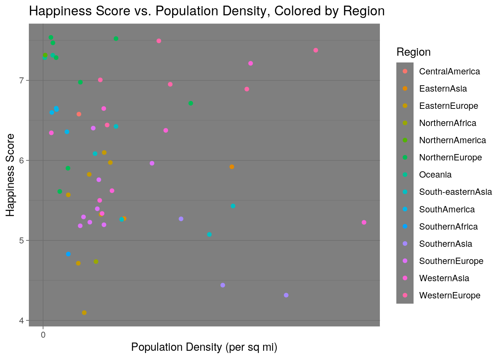
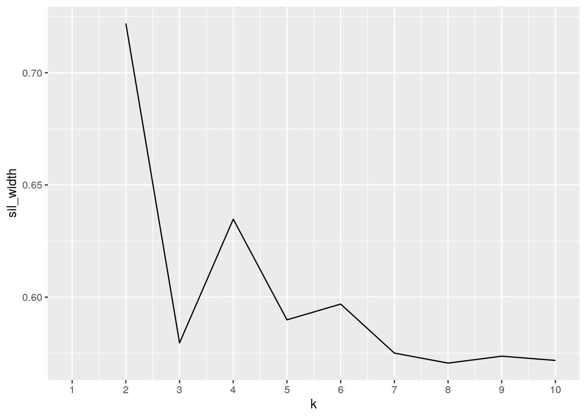
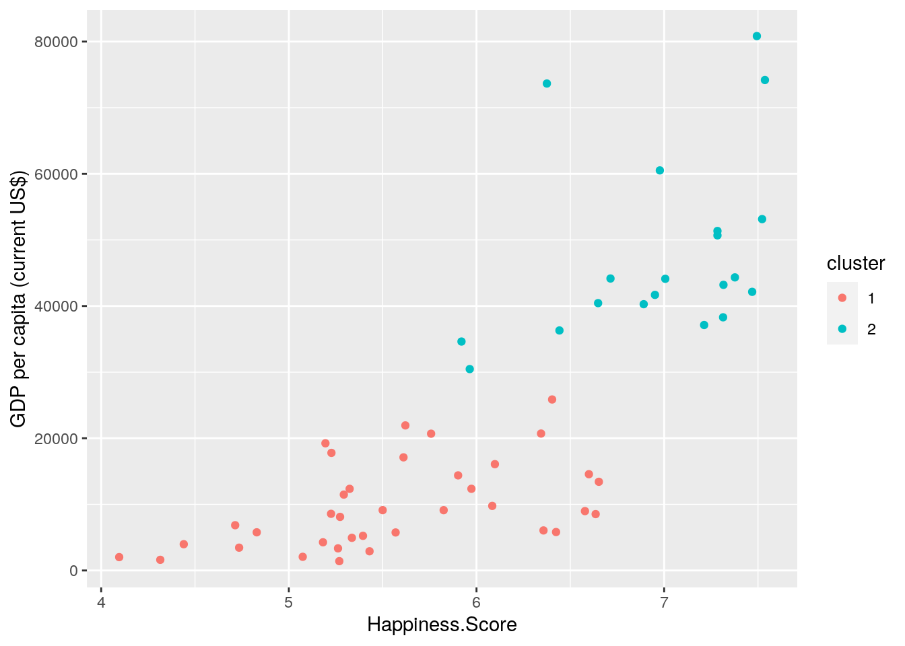
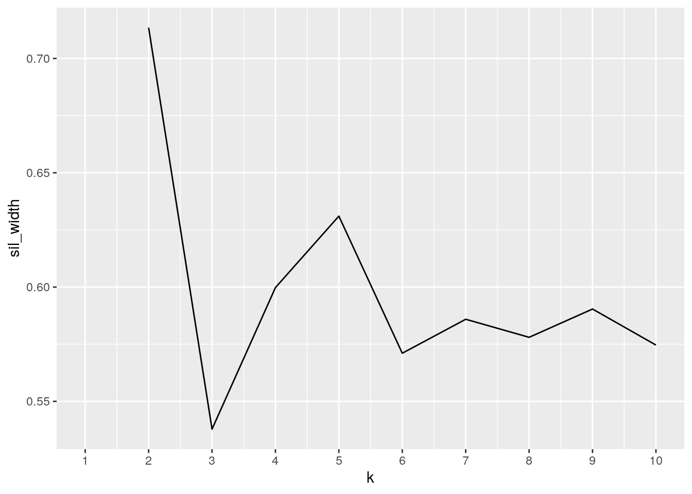
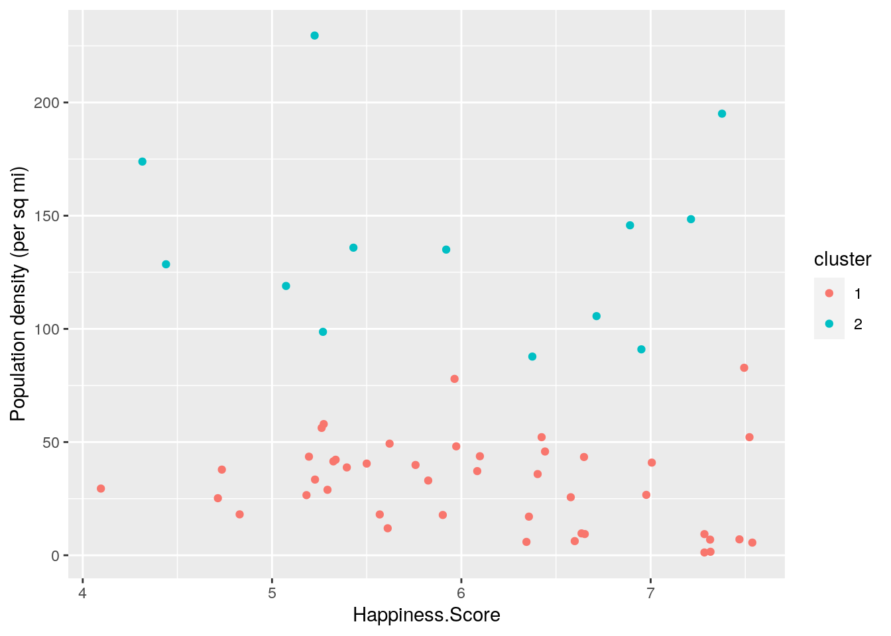

In this investigation, I will explore the correlation between a country’s overall happiness score and their corresponding continent, region, population density (per km2), and GDP per capita (US$). The country name and happiness score variables was imported from the World Happiness Report (X2017) dataset and the country name, continent, region, population density, and GDP per capita was imported from the Socio-Economic Country Profiles (soci_econ_country_profiles) dataset. Both of these datasets were obtained using kaggle.com. I believe there may be a possible association between these datasets in that I expect countries with a higher GDP and lower population density to have a higher happiness score.
library(tidyverse)
library(dplyr)
library(readxl)
X2017 <- read_excel("2017.xlsx")
library(readxl)
soci_econ_country_profiles <- read_excel("soci_econ_country_profiles.xlsx")
wide_happiness <- X2017 %>% pivot_wider(names_from = "country",
values_from = "Happiness.Score")
long_happiness <- wide_happiness %>% pivot_longer(cols = c(1:155),
names_to = "country", values_to = "Happiness.Score")
head(wide_happiness)## # A tibble: 1 x 155
## Norway Denmark Iceland Switzerland Finland Netherlands Canada `New Zealand`
## <dbl> <dbl> <dbl> <dbl> <dbl> <dbl> <dbl> <dbl>
## 1 7.54 7.52 7.50 7.49 7.47 7.38 7.32 7.31
## # … with 147 more variables: Sweden <dbl>, Australia <dbl>, Israel <dbl>,
## # `Costa Rica` <dbl>, Austria <dbl>, `United States` <dbl>, Ireland <dbl>,
## # Germany <dbl>, Belgium <dbl>, Luxembourg <dbl>, `United Kingdom` <dbl>,
## # Chile <dbl>, `United Arab Emirates` <dbl>, Brazil <dbl>, `Czech
## # Republic` <dbl>, Argentina <dbl>, Mexico <dbl>, Singapore <dbl>,
## # Malta <dbl>, Uruguay <dbl>, Guatemala <dbl>, Panama <dbl>, France <dbl>,
## # Thailand <dbl>, `Taiwan Province of China` <dbl>, Spain <dbl>, Qatar <dbl>,
## # Colombia <dbl>, `Saudi Arabia` <dbl>, `Trinidad and Tobago` <dbl>,
## # Kuwait <dbl>, Slovakia <dbl>, Bahrain <dbl>, Malaysia <dbl>,
## # Nicaragua <dbl>, Ecuador <dbl>, `El Salvador` <dbl>, Poland <dbl>,
## # Uzbekistan <dbl>, Italy <dbl>, Russia <dbl>, Belize <dbl>, Japan <dbl>,
## # Lithuania <dbl>, Algeria <dbl>, Latvia <dbl>, `South Korea` <dbl>,
## # Moldova <dbl>, Romania <dbl>, Bolivia <dbl>, Turkmenistan <dbl>,
## # Kazakhstan <dbl>, `North Cyprus` <dbl>, Slovenia <dbl>, Peru <dbl>,
## # Mauritius <dbl>, Cyprus <dbl>, Estonia <dbl>, Belarus <dbl>, Libya <dbl>,
## # Turkey <dbl>, Paraguay <dbl>, `Hong Kong S.A.R., China` <dbl>,
## # Philippines <dbl>, Serbia <dbl>, Jordan <dbl>, Hungary <dbl>,
## # Jamaica <dbl>, Croatia <dbl>, Kosovo <dbl>, China <dbl>, Pakistan <dbl>,
## # Indonesia <dbl>, Venezuela <dbl>, Montenegro <dbl>, Morocco <dbl>,
## # Azerbaijan <dbl>, `Dominican Republic` <dbl>, Greece <dbl>, Lebanon <dbl>,
## # Portugal <dbl>, `Bosnia and Herzegovina` <dbl>, Honduras <dbl>,
## # Macedonia <dbl>, Somalia <dbl>, Vietnam <dbl>, Nigeria <dbl>,
## # Tajikistan <dbl>, Bhutan <dbl>, Kyrgyzstan <dbl>, Nepal <dbl>,
## # Mongolia <dbl>, `South Africa` <dbl>, Tunisia <dbl>, `Palestinian
## # Territories` <dbl>, Egypt <dbl>, Bulgaria <dbl>, `Sierra Leone` <dbl>,
## # Cameroon <dbl>, Iran <dbl>, …head(long_happiness)## # A tibble: 6 x 2
## country Happiness.Score
## <chr> <dbl>
## 1 Norway 7.54
## 2 Denmark 7.52
## 3 Iceland 7.50
## 4 Switzerland 7.49
## 5 Finland 7.47
## 6 Netherlands 7.38First, I had to import the tidyverse and dplyr packages as well as the two datasets into R. Then, I transformed the X2017 dataset from long to wide by first using the pivot_wider function, ensuring that the dataset received its names from the country variable and the values from the Happiness.Score variable. I then transformed the X2017 dataset from wide back to long by using the pivot_longer function, ensuring that the dataset transformed its names to the country variable and the values to the Happiness.Score variable.
full_happiness <- inner_join(soci_econ_country_profiles, X2017,
by = c(Country = "country"))
length(setdiff(soci_econ_country_profiles$Country, X2017$country))## [1] 8length(setdiff(X2017$country, soci_econ_country_profiles$Country))## [1] 98length(intersect(soci_econ_country_profiles$Country, X2017$country))## [1] 57In order to join the two datasets, I used the dplyr inner_join function as I needed to join the two datasets and drop any of the country variable rows in either dataset that were not found in both datasets. Addtionally, I did not want there to be NA values within my data, thus causing me to need to intersect my two datasets and not use the dplyr full_join function.
As shown by the length(setdiff) function, there are 8 countries that appear in the soci_econ_country_profiles dataset that do not appear in the X2017 dataset while there are 98 countries that appear in the X2017 dataset that appear in the X2017 dataset that do not appear in the soci_econ_country_profiles dataset. Therefore, there is an intersection of 57 total countries between the two datasets and 106 total country cases were dropped from the data.
As this removal allowed for a more cohesive dataset to be produces, thus allowing for a better comparison of the joined variables in the combined dataset. For this reason, I do not see any potential problems with removing the dropped cases from the combined dataset.
full_happiness2 <- full_happiness %>% mutate(`Population density (per sq mi)` = `Population density (per km2, 2017)`/2.59) %>%
select(Country, Continent, Region, Happiness.Score, "GDP per capita (current US$)",
"Population density (per sq mi)", "Population density (per km2, 2017)")
head(full_happiness2)## # A tibble: 6 x 7
## Country Continent Region Happiness.Score `GDP per capita… `Population den…
## <chr> <chr> <chr> <dbl> <dbl> <dbl>
## 1 Argent… South Am… South… 6.60 14564. 6.25
## 2 Austra… Australia Ocean… 7.28 51352. 1.24
## 3 Austria Europe Weste… 7.01 44118. 40.9
## 4 Belarus Europe Easte… 5.57 5751. 18.0
## 5 Belgium Europe Weste… 6.89 40278. 146.
## 6 Bosnia… Europe South… 5.18 4265 26.6
## # … with 1 more variable: `Population density (per km2, 2017)` <dbl>head(full_happiness2 %>% arrange(desc(Happiness.Score)))## # A tibble: 6 x 7
## Country Continent Region Happiness.Score `GDP per capita… `Population den…
## <chr> <chr> <chr> <dbl> <dbl> <dbl>
## 1 Norway Europe North… 7.54 74186. 5.60
## 2 Denmark Europe North… 7.52 53149. 52.2
## 3 Switze… Europe Weste… 7.49 80831. 82.8
## 4 Finland Europe North… 7.47 42148. 7.03
## 5 Nether… Europe Weste… 7.38 44332. 195.
## 6 Canada North Am… North… 7.32 43206. 1.54
## # … with 1 more variable: `Population density (per km2, 2017)` <dbl>full_happiness2 %>% summarize(quantile(Happiness.Score))## # A tibble: 5 x 1
## `quantile(Happiness.Score)`
## <dbl>
## 1 4.10
## 2 5.29
## 3 5.97
## 4 6.71
## 5 7.54full_happiness2 %>% group_by(full_happiness2$Continent) %>% summarize(mean(`Population density (per sq mi)`),
mean(`GDP per capita (current US$)`), mean(Happiness.Score))## # A tibble: 6 x 4
## `full_happiness2$… `mean(\`Population d… `mean(\`GDP per ca… `mean(Happiness.…
## <chr> <dbl> <dbl> <dbl>
## 1 Africa 28.0 4613. 4.78
## 2 Asia 91.2 16119. 5.65
## 3 Australia 4.07 44823. 7.30
## 4 Europe 48.3 29084. 6.18
## 5 North America 13.6 26093. 6.95
## 6 South America 10.6 10641. 6.56full_happiness2 %>% group_by(full_happiness2$Region) %>% summarize(mean(`Population density (per sq mi)`),
mean(`GDP per capita (current US$)`), mean(Happiness.Score))## # A tibble: 14 x 4
## `full_happiness2$… `mean(\`Population … `mean(\`GDP per ca… `mean(Happiness.…
## <chr> <dbl> <dbl> <dbl>
## 1 CentralAmerica 25.6 8981. 6.58
## 2 EasternAsia 96.5 21369. 5.60
## 3 EasternEurope 34.1 9218. 5.37
## 4 NorthernAfrica 37.8 3452. 4.74
## 5 NorthernAmerica 1.54 43206. 7.32
## 6 NorthernEurope 29.5 44543. 6.88
## 7 Oceania 4.07 44823. 7.30
## 8 South-easternAsia 80.1 4780. 5.65
## 9 SouthAmerica 10.6 10641. 6.56
## 10 SouthernAfrica 18.1 5773 4.83
## 11 SouthernAsia 134. 2333. 4.67
## 12 SouthernEurope 40.6 16878. 5.55
## 13 WesternAsia 80.9 27064. 6.03
## 14 WesternEurope 100. 47925. 7.03full_happiness2 %>% filter(`GDP per capita (current US$)` > median(`GDP per capita (current US$)`)) %>%
summarize(mean(Happiness.Score))## # A tibble: 1 x 1
## `mean(Happiness.Score)`
## <dbl>
## 1 6.64full_happiness2 %>% filter(`GDP per capita (current US$)` < median(`GDP per capita (current US$)`)) %>%
summarize(mean(Happiness.Score))## # A tibble: 1 x 1
## `mean(Happiness.Score)`
## <dbl>
## 1 5.45full_happiness2 %>% filter(`Population density (per sq mi)` >
median(`Population density (per sq mi)`)) %>% summarize(mean(Happiness.Score))## # A tibble: 1 x 1
## `mean(Happiness.Score)`
## <dbl>
## 1 6.03full_happiness2 %>% filter(`Population density (per sq mi)` <
median(`Population density (per sq mi)`)) %>% summarize(mean(Happiness.Score))## # A tibble: 1 x 1
## `mean(Happiness.Score)`
## <dbl>
## 1 6.11full_happiness2 %>% group_by(full_happiness2$Region) %>% summarize(max_GDP = max(`GDP per capita (current US$)`)) %>%
arrange(desc(max_GDP))## # A tibble: 14 x 2
## `full_happiness2$Region` max_GDP
## <chr> <dbl>
## 1 WesternEurope 80831.
## 2 NorthernEurope 74186.
## 3 WesternAsia 73653.
## 4 Oceania 51352.
## 5 NorthernAmerica 43206.
## 6 EasternAsia 34629.
## 7 SouthernEurope 30462.
## 8 EasternEurope 16082.
## 9 SouthAmerica 14564.
## 10 South-easternAsia 9768.
## 11 CentralAmerica 8981.
## 12 SouthernAfrica 5773
## 13 SouthernAsia 3974.
## 14 NorthernAfrica 3452.full_happiness2 %>% filter(`GDP per capita (current US$)` ==
max(`GDP per capita (current US$)`)) %>% select(Country)## # A tibble: 1 x 1
## Country
## <chr>
## 1 Switzerlandfull_happiness2 %>% group_by(full_happiness2$Region) %>% summarize(min_GDP = min(`GDP per capita (current US$)`)) %>%
arrange(min_GDP)## # A tibble: 14 x 2
## `full_happiness2$Region` min_GDP
## <chr> <dbl>
## 1 SouthernAsia 1410.
## 2 EasternEurope 2022.
## 3 South-easternAsia 2068.
## 4 NorthernAfrica 3452.
## 5 SouthernEurope 4265
## 6 WesternAsia 4940.
## 7 SouthernAfrica 5773
## 8 SouthAmerica 6056.
## 9 EasternAsia 8109.
## 10 CentralAmerica 8981.
## 11 NorthernEurope 14384.
## 12 WesternEurope 36304.
## 13 Oceania 38294.
## 14 NorthernAmerica 43206.full_happiness2 %>% filter(`GDP per capita (current US$)` ==
min(`GDP per capita (current US$)`)) %>% select(Country)## # A tibble: 1 x 1
## Country
## <chr>
## 1 Pakistanfull_happiness2 %>% group_by(full_happiness2$Region) %>% summarize(max_population = max(`Population density (per sq mi)`)) %>%
arrange(desc(max_population))## # A tibble: 14 x 2
## `full_happiness2$Region` max_population
## <chr> <dbl>
## 1 WesternAsia 230.
## 2 WesternEurope 195.
## 3 SouthernAsia 174.
## 4 South-easternAsia 136.
## 5 EasternAsia 135.
## 6 NorthernEurope 106.
## 7 SouthernEurope 77.9
## 8 EasternEurope 48.1
## 9 NorthernAfrica 37.8
## 10 CentralAmerica 25.6
## 11 SouthernAfrica 18.1
## 12 SouthAmerica 17.1
## 13 Oceania 6.91
## 14 NorthernAmerica 1.54full_happiness2 %>% filter(`Population density (per sq mi)` ==
max(`Population density (per sq mi)`)) %>% select(Country)## # A tibble: 1 x 1
## Country
## <chr>
## 1 Lebanonfull_happiness2 %>% group_by(full_happiness2$Region) %>% summarize(min_population = min(`Population density (per sq mi)`)) %>%
arrange(min_population)## # A tibble: 14 x 2
## `full_happiness2$Region` min_population
## <chr> <dbl>
## 1 Oceania 1.24
## 2 NorthernAmerica 1.54
## 3 NorthernEurope 5.60
## 4 WesternAsia 5.91
## 5 SouthAmerica 6.25
## 6 EasternEurope 18.0
## 7 SouthernAfrica 18.1
## 8 CentralAmerica 25.6
## 9 SouthernEurope 26.6
## 10 South-easternAsia 37.2
## 11 NorthernAfrica 37.8
## 12 WesternEurope 40.9
## 13 EasternAsia 58.0
## 14 SouthernAsia 98.7full_happiness2 %>% filter(`Population density (per sq mi)` ==
min(`Population density (per sq mi)`)) %>% select(Country)## # A tibble: 1 x 1
## Country
## <chr>
## 1 Australiafull_happiness2 %>% filter(`GDP per capita (current US$)` > median(`GDP per capita (current US$)`)) %>%
summarize(median(`Population density (per sq mi)`))## # A tibble: 1 x 1
## `median(\`Population density (per sq mi)\`)`
## <dbl>
## 1 43.5full_happiness2 %>% filter(`GDP per capita (current US$)` < median(`GDP per capita (current US$)`)) %>%
summarize(median(`Population density (per sq mi)`))## # A tibble: 1 x 1
## `median(\`Population density (per sq mi)\`)`
## <dbl>
## 1 38.3full_happiness2 %>% filter(`Population density (per sq mi)` >
median(`Population density (per sq mi)`)) %>% summarize(median(`GDP per capita (current US$)`))## # A tibble: 1 x 1
## `median(\`GDP per capita (current US$)\`)`
## <dbl>
## 1 20591.full_happiness2 %>% filter(`Population density (per sq mi)` <
median(`Population density (per sq mi)`)) %>% summarize(median(`GDP per capita (current US$)`))## # A tibble: 1 x 1
## `median(\`GDP per capita (current US$)\`)`
## <dbl>
## 1 13900.To begin my wrangling investigation, first I decided to mutate the population density variable from being in km^2 to being in mi^2 in order for both my GDP per capita and population density to be in the U.S. Imperial system of measurement, thus creating a new and more cohesive dataset. I then arranged my data in descending order of the Happiness.Score variable in order to see the ranking of countries according to highest to lowest happiness scores, allowing me to see that the top three countries according to happiness score were Norway, Denmark, and Switzerland. Next, in order to see the breakdown of happiness scores, I used the summarize(quantile) function, thus causing me to see the min, median, and max of the Happiness.Score variable. Next, in order to test how the population density, GDP per capita, and happiness score compared between each region and its corresponding continent, I utilized the summarize, group_by, and mean functions individually for continent and region.
After my initial wrangling tests, I was then curious to see how the average happiness score differed when compared to countries that had a GDP per capita or population density greater than the median values for each variable. As a result, I used the filter, summarize, mean, and median functions to test this idea and found that when the GDP per capita and population density was greater than the medians for each value, the happiness score was 6.64 and 5.45 respectively. To compare these findings with when the GDP per capita and population density was less than the median values, I conducted a similar test and found the happiness scores to be 6.03 and 6.11, respectively, thus showing that while the happiness score did decrease with a lower GDP, happiness score did in fact increase with a lower population density as I predicted. I then found the maximum and minimum GDP per capita per each given region and used the select function to find that the country with the greatest GDP per capita was Switzerland, while the country with the least GDP per capita was Pakistan. I also conducted a similar test using population density and found that Lebanon had the highest population density, while Australia had the lowest population density. Lastly, I wanted to compare the GDP per capita and population density variables, thus causing me to use the filter, summarize, and median functions to find the median population density when GDP per capita was greater (43.5 mi^2) and less (38.3 mi^2) than the median GDP per capita. I then conducted the reverse test to find the median GDP per capita when population density was greater ($20,591) and less ($13,900) than the median population density.
corMatrix <- full_happiness2 %>% select_if(is.numeric) %>% cor(use = "pair")
tidycor <- corMatrix %>% as.data.frame %>% rownames_to_column("var1") %>%
pivot_longer(-1, names_to = "var2", values_to = "correlation")
tidycor %>% ggplot(aes(var1, var2, fill = correlation)) + geom_tile() +
geom_text(aes(label = round(correlation, 2)), color = "black",
size = 3) + theme(axis.text.x = element_text(angle = 90,
hjust = 1)) + scale_fill_gradient2(low = "white", mid = "blue",
high = "light blue") + ggtitle("Correlation Heatmap")
library(ggplot2)
ggplot(data = full_happiness2, aes(x = Region, y = Happiness.Score,
fill = Region)) + geom_bar(stat = "summary", fun = mean) +
theme(legend.position = "None") + facet_wrap(~Continent) +
theme(axis.text.x = element_text(angle = 90, hjust = 1)) +
labs(title = "Mean Happiness Score vs. Region, Faceted by Continent",
x = "Region", y = "Mean Happiness Score")
ggplot(data = full_happiness2, aes(x = `GDP per capita (current US$)`,
y = Happiness.Score, color = Region)) + geom_point() + theme(axis.text.x = element_text(angle = 90,
hjust = 1)) + scale_x_continuous(breaks = round(seq(0, 90000,
10000))) + theme_dark() + labs(title = "Happiness Score vs. GDP per capita, Colored by Region",
x = "GDP per capita (current US$)", y = "Happiness Score")
ggplot(data = full_happiness2, aes(x = `Population density (per sq mi)`,
y = Happiness.Score, color = Region)) + geom_point() + theme(axis.text.x = element_text(angle = 90,
hjust = 1)) + scale_x_continuous(breaks = round(seq(0, 3500,
500))) + theme_dark() + labs(title = "Happiness Score vs. Population Density, Colored by Region",
x = "Population Density (per sq mi)", y = "Happiness Score") As shown by the Correlation Heatmap, there is a 0.78 correlation between happiness score and GDP per capita, thus showing there to be a relatively large positive correlation between the two variables. However, there is a -0.15 correlation between happiness score and population density, thus showing that there is a very weak negative association between the two variables. Lastly, there is a 0.18 correlation between population density and GDP per capita, thus showing there to be very weak association between the two variables. Furthermore, in this graph, it is shown that there is a 1.00 correlation between population density (per sq mi) and population density (per km2, 2017) due to the fact that these two variables correspond to the same number, but in different units.
Next, as shown by the Mean Happiness Score vs. Region, Faceted by Continent graph, it appears as though the Australia has the highest mean happiness scores for each region, while Africa has the lowest mean happiness scores for each region. Lastly, in order to compare happiness score for each region to both GDP per capita and population density, I created two scatterplots colored by region. From these two graphs, a positive correlation between happiness score and GDP per capita per region can be seen, while there does not appear to be as strong of a correlation between happiness score and population density per region with many of the points being scattered seemingly randomly throughout the graph.
library(cluster)
pam_dat <- full_happiness2 %>% select(Happiness.Score, `GDP per capita (current US$)`)
sil_width <- vector()
for (i in 2:10) {
pam_fit <- pam(pam_dat, k = i)
sil_width[i] <- pam_fit$silinfo$avg.width
}
ggplot() + geom_line(aes(x = 1:10, y = sil_width)) + scale_x_continuous(name = "k",
breaks = 1:10)
pam1 <- full_happiness2 %>% select(Happiness.Score, `GDP per capita (current US$)`) %>%
pam(k = 2)
pamclust = full_happiness2 %>% mutate(cluster = as.factor(pam1$clustering))
pamclust %>% ggplot(aes(Happiness.Score, `GDP per capita (current US$)`,
color = cluster)) + geom_point()
pamclust %>% group_by(cluster) %>% select(cluster, Happiness.Score,
`GDP per capita (current US$)`) %>% summarize_if(is.numeric,
mean, na.rm = T)## # A tibble: 2 x 3
## cluster Happiness.Score `GDP per capita (current US$)`
## <fct> <dbl> <dbl>
## 1 1 5.56 9883.
## 2 2 6.98 48078.full_happiness2 %>% slice(pam1$id.med) %>% select(Region, Happiness.Score,
`GDP per capita (current US$)`)## # A tibble: 2 x 3
## Region Happiness.Score `GDP per capita (current US$)`
## <chr> <dbl> <dbl>
## 1 WesternAsia 5.22 8571.
## 2 NorthernAmerica 7.32 43206.pam1$silinfo$avg.width## [1] 0.7220146library(cluster)
pam_dat <- full_happiness2 %>% select(Happiness.Score, `Population density (per sq mi)`)
sil_width <- vector()
for (i in 2:10) {
pam_fit <- pam(pam_dat, k = i)
sil_width[i] <- pam_fit$silinfo$avg.width
}
ggplot() + geom_line(aes(x = 1:10, y = sil_width)) + scale_x_continuous(name = "k",
breaks = 1:10)
pam1 <- full_happiness2 %>% select(Happiness.Score, `Population density (per sq mi)`) %>%
pam(k = 2)
pamclust = full_happiness2 %>% mutate(cluster = as.factor(pam1$clustering))
pamclust %>% ggplot(aes(Happiness.Score, `Population density (per sq mi)`,
color = cluster)) + geom_point()
pamclust %>% group_by(cluster) %>% select(cluster, Happiness.Score,
`Population density (per sq mi)`) %>% summarize_if(is.numeric,
mean, na.rm = T)## # A tibble: 2 x 3
## cluster Happiness.Score `Population density (per sq mi)`
## <fct> <dbl> <dbl>
## 1 1 6.09 31.4
## 2 2 5.94 138.full_happiness2 %>% slice(pam1$id.med) %>% select(Region, Happiness.Score,
`Population density (per sq mi)`)## # A tibble: 2 x 3
## Region Happiness.Score `Population density (per sq mi)`
## <chr> <dbl> <dbl>
## 1 EasternEurope 5.82 33.0
## 2 EasternAsia 5.92 135.pam1$silinfo$avg.width## [1] 0.7135178During this section of the investigation, I used k-means/PAM clustering. First, I looked at the clustering between the two variables Happiness.Score and GDP per capita (current US$) and saw that within the ggplot using the goodness of fit that the highest silhouette width occurs at 2 clusters (k=2). I then used the pam() function to plot and summarize the clusters and found that the mean of cluster 1 was approximately 5.56, while the mean of cluster 2 was approximately 6.98. Additionally, it can be seen that the region WesternAsia had the closest mean to cluster 1 (5.22) and the region NorthernAmerica had the closest mean to cluster 2 (7.32). Lastly, the average silhouette width between happiness score and GDP per capita is approximately 0.722, thus showing that a strong structure had been found between the two variables. These results allow us to see that at a higher GDP per capita, there tends to be a higher associated happiness score.
Next, I looked at the clustering between the two variables Happiness.Score and Population density (per sq mi) and saw that within the ggplot using the goodness of fit that the highest silhouette width occurs at 2 clusters (k=2). Then, using the pam() function I plotted and summarized the clusters and found that the mean of cluster 1 was approximately 6.09 and the mean of cluster 2 was approximately 5.94. Further, it can be seen that the region EasternEurope had the closest mean to cluster 1 (5.82) and the region EasternAsia had the closest mean to cluster 2 (5.92). Lastly, the average silhouette width between happiness score and population density is approximately 0.714, thus showing that a strong structure had been found between the two variables.
…